01 / Growing Up
19
MY AGE
WELCOME TO MY PERSONAL SPACE
A little website about me, the things I love, and the beautiful moments that make life meaningful.
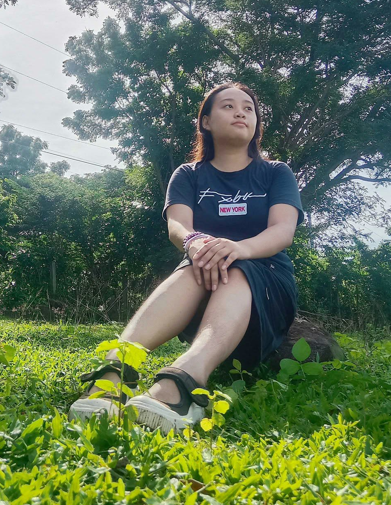
A little glimpse of me ♡
A LITTLE INTRODUCTION
Welcome to my personal website! This is my little corner of the internet where I share my life, favorite foods, family, hobbies, and everything that makes me happy.
♡ Stay awhile and get to know me! ♡
A collection of little details, memories, and things that make me who I am.
✿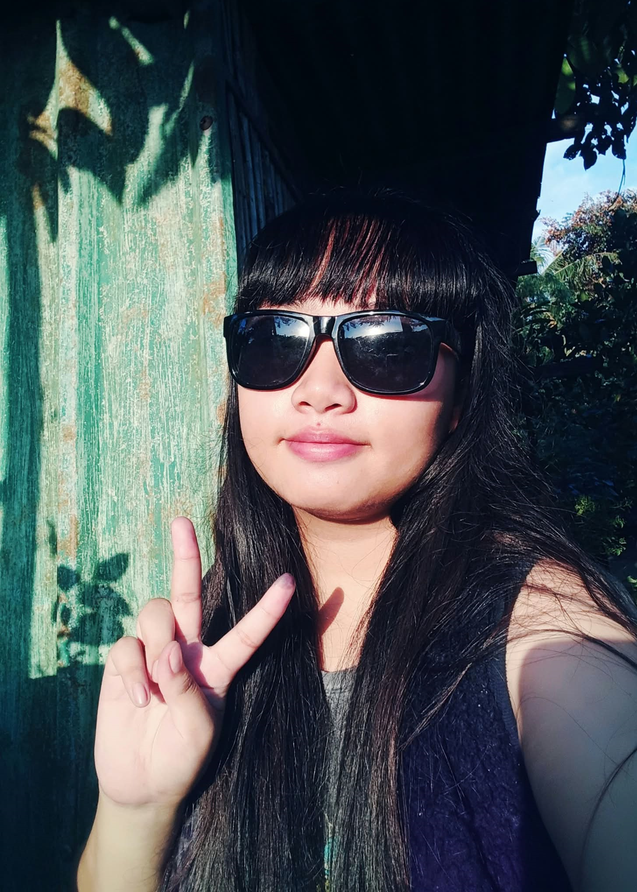
that's me! ♡ EST. 2007Just a girl who finds happiness in simple things, loves creating memories, and appreciates the beauty of everyday life.
I may be a little shy at first, but I enjoy meeting people, exploring new things, and spending time with the ones I love.
GET TO KNOW MY TRAVELS
A little introduction about my travels.
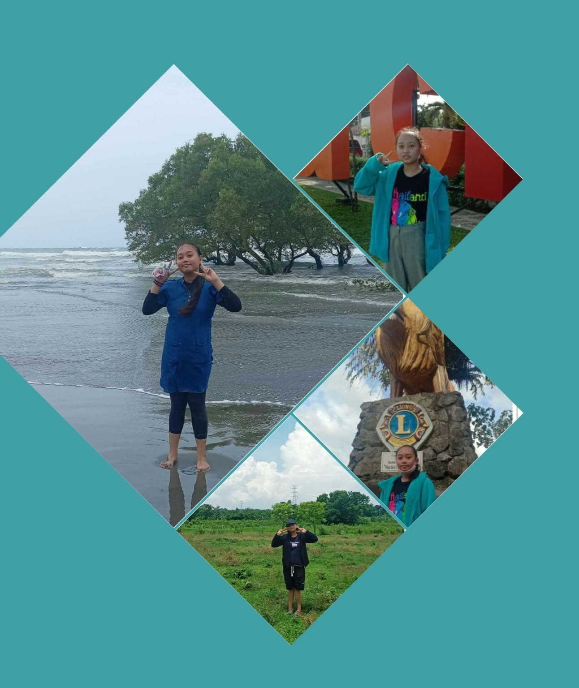
♡ 4 Pics, 1 Meaning ♡
I may not have been to many places, but every place I've been holds a memory I treasure. A quiet farm in Pontevedra, the bustling La Carlota, the cool air in Don Salvador Benedicto, and the waves in Cauayan, each one reminds me that i don't need to go far to make a beautiful memory.
I believe that life is made of little moments that makes me smile.
MY AGE
MY BIRTHDAY
MY FAVORITE COLOR
MY PERSONALITY
WORDS I KEEP CLOSE
01"Life is a reality to be experienced, not a problem to be solved."
— Alan Watts
02"Don't get too deep... overthinking leads to problems that didn't even exist in the first place."
— Jayson Engay
03"One important key to success is self-confidence. An important key to self-confidence is preparation."
— Marcus Tullius Cicero
THINGS I ENJOY
Little things that make me happy.
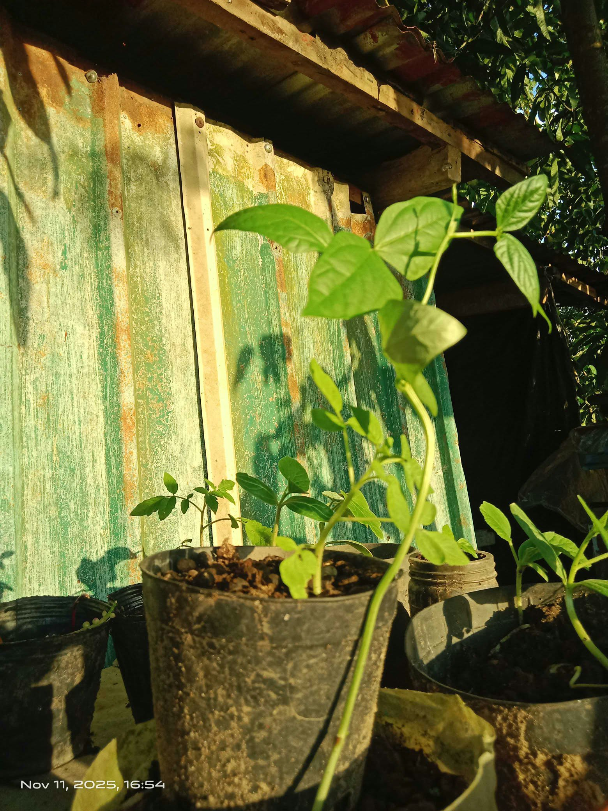
This photo was taken a year ago, but this hobby is still on my list.
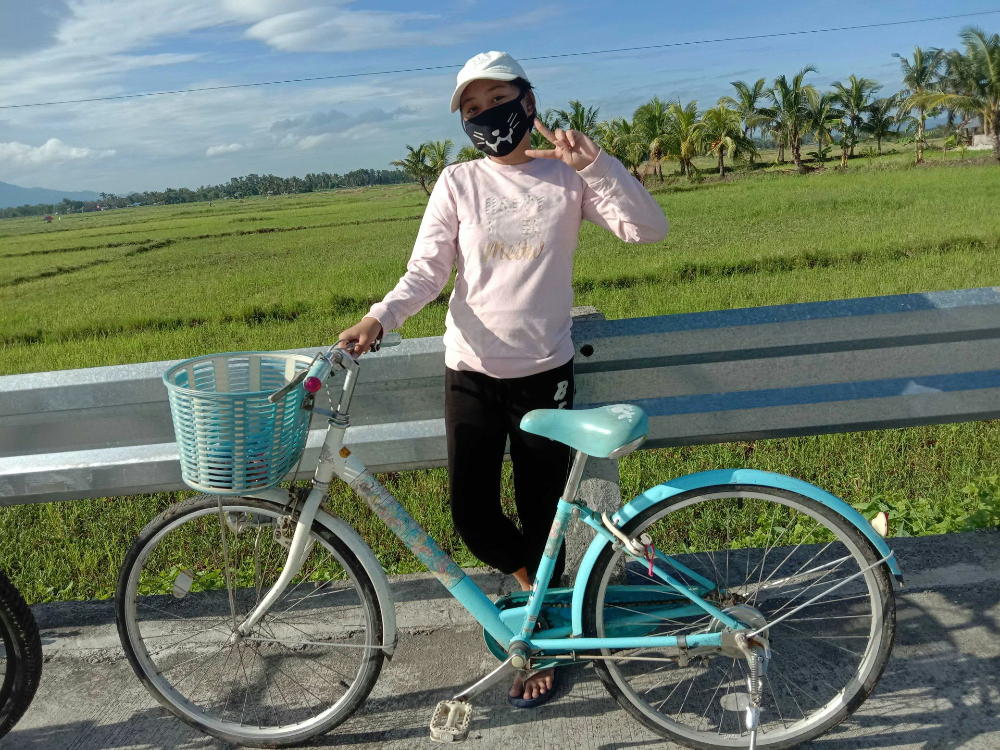
I love biking because it gives me time to explore and enjoy the outdoors.
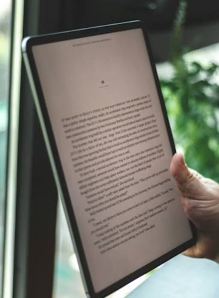
I love reading novels because they take me into different worlds and stories.
02 / A TASTE OF HAPPINESS
Food is one of the little things that makes me happy. Here's a glimpse of some of my favorite treats.
Vitamilk Choco and Yakult are my favorites out of many because they are simple, sweet, and always make me feel happy. No matter how many new drinks I try, I always come back to them because they taste like comfort and childhood in my heart.
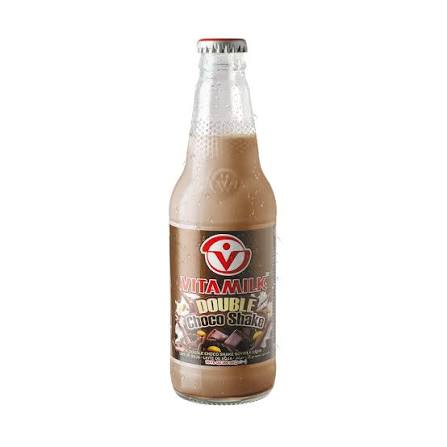
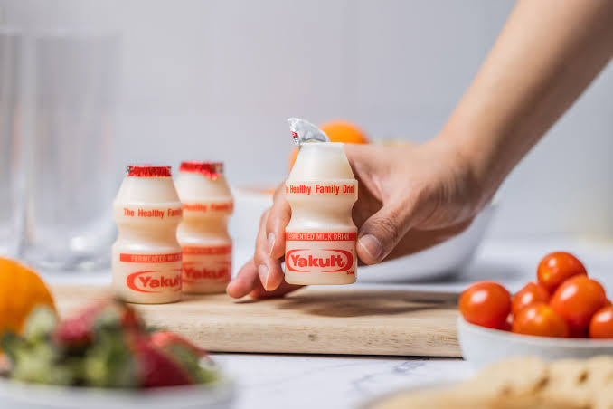
Chicken Tinola and Lechon Manok are my favorites out of many meals because they remind me of family meals at home. One is warm and comforting, the other is crispy and joyful, both taste like love.
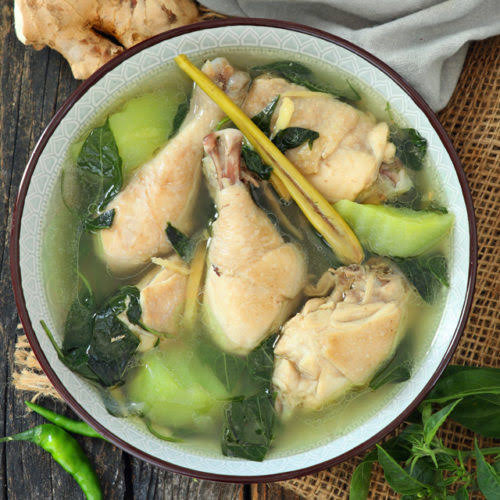
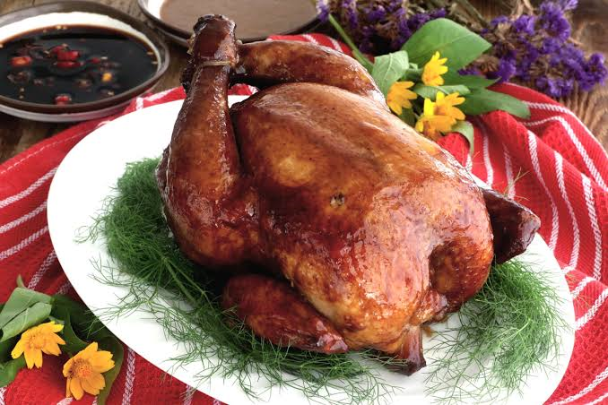
Cakes and Ice Cream are my favorite desserts because they are sweet, soft, and always make me smile. No matter what flavor, they always make any day feel a little more special and happy.
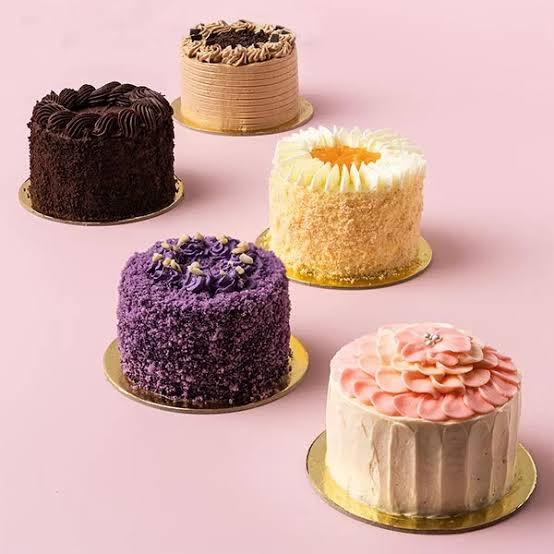
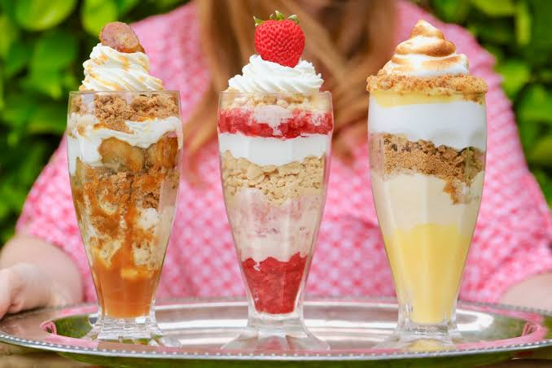
03 / THE PEOPLE I LOVE
My home, my happiness, and my everything. The people who make life special. Family is one of the greatest blessings in life. They are the people who support me, guide me, and make every moment special.
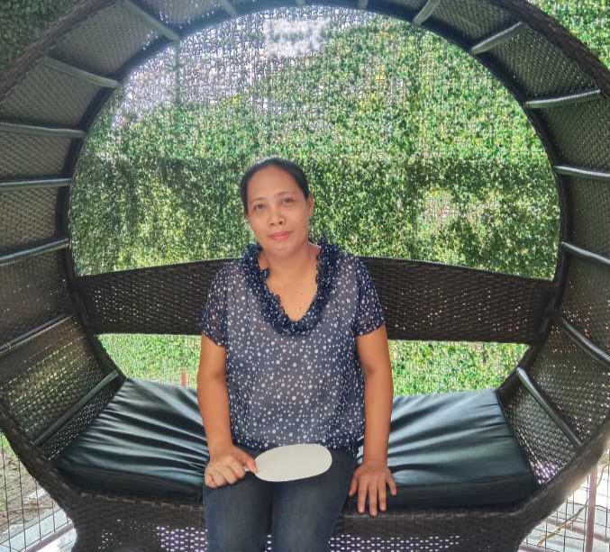
My loving mother, who always takes care of me and inspires me.
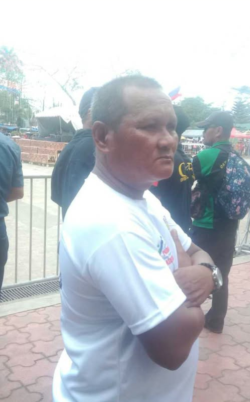
My father, who works hard and supports our family.
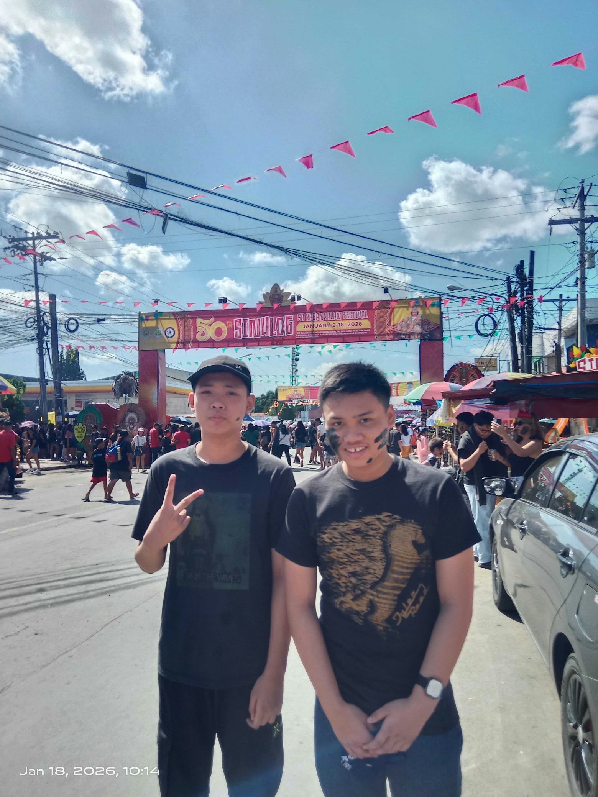
My siblings, who make life more fun and memorable.
LET'S CONNECT
Feel free to reach out to me through my socials or email!
Mar Somo Mangao
marielmangao64@gmail.com